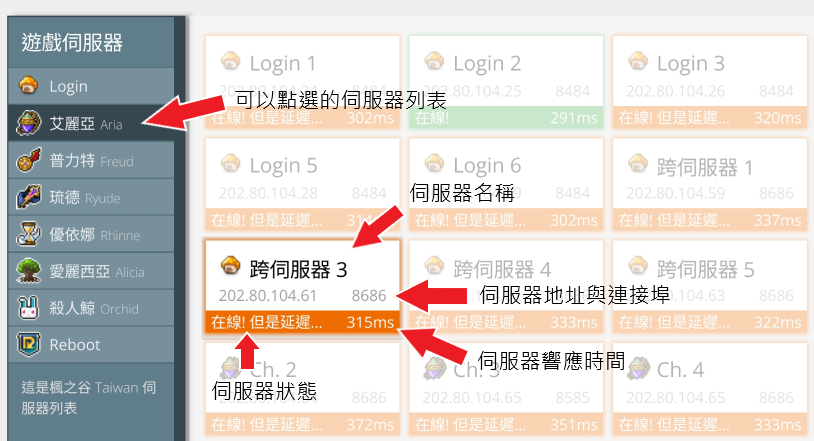

如何使用 maple.watch?
首先在頁面頂部欄或下面的清單中選擇您要檢查的伺服器:
-
— 即將推出 — 部分完成
你可以從裡面看到任何伺服器跟目前分流狀態。
⚠️目前有個問題:
除非下載此專案(maple.watch)本地架設網站運行，
或使用 Firefox 瀏覽器查看此網頁，否則以 Chrome 瀏覽時，
顯示延遲只有個位數字(1或2)是不正確的伺服器狀況。

加載中, 請稍後...
這個網站可讓您查看楓之谷各個伺服器的延遲是否開機，而無須打開遊戲！
首先在頁面頂部欄或下面的清單中選擇您要檢查的伺服器:
你可以從裡面看到任何伺服器跟目前分流狀態。
⚠️目前有個問題:
除非下載此專案(maple.watch)本地架設網站運行，
或使用 Firefox 瀏覽器查看此網頁，否則以 Chrome 瀏覽時，
顯示延遲只有個位數字(1或2)是不正確的伺服器狀況。
很簡單: maple.watch 追蹤您 與楓之谷伺服器的連接，並告訴您來自每台伺服器的 ping 響應。
其他狀態檢查網站都很棒，您絕對也可以繼續使用，但可能存在一些缺陷，maple.watch 打算修復這些缺陷：
maple.watch 的工作方式與其他狀態檢查網站完全不同：
在此調整網站的運作方式。
資料儲存為 cookie，以供您下次造訪網頁時使用。
若要選擇不同的伺服器，請在頁面頂部欄選擇你的楓之谷伺服器！
We haven't added 's servers yet, but we're planning on doing this really soon!
載入中, 請稍後...